Što ćeš na kraju imati
Jedan DWG i jedan PDF: nosač vretena PS1-01-002 u tlocrtu s djelomičnim presjekom navojne rupe i u presjeku A-A, potpuno kotiran (stil kota TD_1-1, tolerancije, oznake navoja), mjerilo 1:1 na A4. Polaziš od svog crteža iz V1. Ovako izgleda PDF:
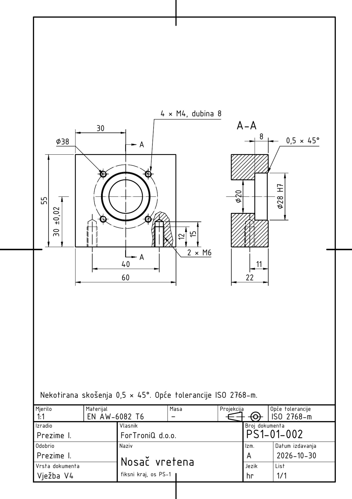
Prije početka pročitaj ovo (2 minute)
- „Klikni“ = jedan klik lijevom tipkom miša. „Upiši“ = tipkaj na tipkovnici.
- Nakon svakog upisa pritisni Enter. U okvirima Upiši uz svaki unos piše Enter – svaki put ga stvarno pritisni.
- Koordinate se pišu X,Y – zarez odvaja X i Y, npr.
210,297. Decimalni broj piše se s točkom, npr.148.5. - Točka
0,0je donji lijevi kut lista. X raste udesno, Y raste prema gore. Sve mjere su u milimetrima. - Pogriješio(la) si? Pritisni Esc (prekida naredbu), a Ctrl+Z poništava zadnju radnju.
- Za ovu vježbu treba ti gotova V1 (list s okvirom, zaglavljem, slojevima i stilom TD_ISO). Ako je nemaš, najprije napravi V1. Postupke iz V2 (kopiranje lista, TEXTEDIT, ispis 2:1) ovdje ponavljamo ukratko.
- Uz svaki korak je kvačica gotovo – označi je kad završiš korak, pa ćeš znati gdje si stao(la).
Ako nešto ne ide
- Piše „Unknown command“ – naredba nije bila pokrenuta. Pritisni Esc, pa ponovno klikni alat (ili upiši naredbu) i tek onda brojeve.
- Ne vidiš što si nacrtao(la) – upiši
ZOOMEnterEEnter. - Crte su na krivom mjestu – provjeri dio B (DYNMODE i OSMODE moraju biti 0) i jesi li pisao(la) točku, a ne zarez, u decimalnom broju.
- Ne znaš gdje si stao(la) – sve koordinate u tablicama su točne; nacrtano usporedi sa slikom koraka. Pogrešnu crtu klikni i pritisni Delete.
- Tekst se ne da kliknuti (TEXTEDIT) – približi ga (ZOOM W) i klikni točno na crtu slova.
- Crta je krive boje ili debljine – bila je odabran krivi sloj. Klikni crtu, pa u popisu slojeva na traci odaberi pravi sloj i pritisni Esc.
Sadržaj
- A. Otvori svoj crtež iz V1 i spremi ga kao V4
- B. Tri postavke na početku
- C. Obriši probu pisma iz V1
- D. Zaglavlje
- E. Stil kota TD_1-1
- F. Tlocrt – obris, osi i oznaka presjeka
- G. Provrt Ø28 H7 i provrti M4
- H. Djelomični presjek – rupe M6
- I. Presjek A-A
- J. Kote
- K. Napomena i cijeli list
- R. Ispis u PDF
- Z. Spremi, vrati postavke i predaj
AOtvori svoj crtež iz V1 i spremi ga kao V4
1
Pokreni AutoCAD 2027. Na zaslonu Start, pod Recent, klikni sličicu svog crteža iz vježbe 1 (
TD_2026-2027_Prezime_Ime_V01). Ako ga nema, klikni Open… i pronađi ga.

2
Upiši
SAVEAS Enter. U polju File name upiši TD_2026-2027_Prezime_Ime_V04 (svoje prezime i ime) i klikni Save.Upiši:
SAVEAS Enter
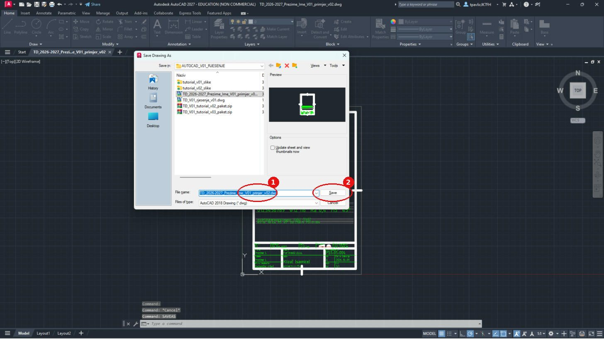
Na kartici crteža gore lijevo ime završava s V04. Crtež iz V1 ostao je netaknut.
BTri postavke na početku
3
Upiši redom (nakon svakog Enter):
| Naredba | Vrijednost | Zašto |
|---|---|---|
DYNMODE | 0 | broj koji upišeš znači točno mjesto na listu |
OSMODE | 0 | kursor ne „skače“ na obližnje točke |
GRIDMODE | 0 | nema mreže kvadratića |

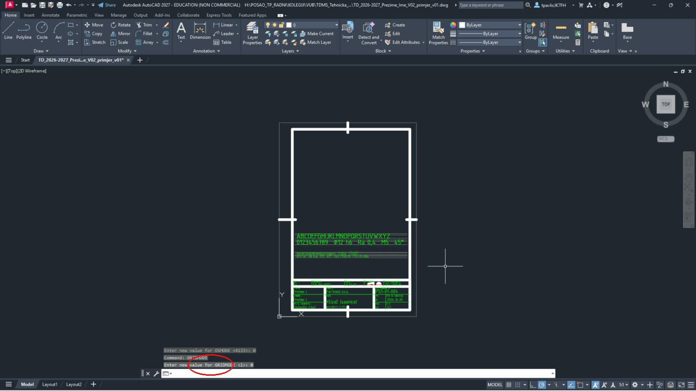
CObriši probu pisma iz V1
4
Upiši
ERASE Enter, W Enter, 22,60 Enter, 198,285 Enter, pa još jednom Enter.Upiši:
ERASE Enter W Enter 22,60 Enter 198,285 Enter (Enter)

Proba pisma i pomoćne crte su obrisane, a okvir i zaglavlje su ostali.
DZaglavlje
5
Približi zaglavlje:
ZOOM Enter, W Enter, 15,5 Enter, 205,60 Enter. Upiši TEXTEDIT Enter i promijeni tekstove (klik na tekst → upiši novi → Enter; na kraju Esc):Upiši:
ZOOM Enter W Enter 15,5 Enter 205,60 Enter TEXTEDIT Enter| Polje | Sada piše (iz V1) | Upiši |
|---|---|---|
| Materijal | EN AW-6082 | EN AW-6082 T6 |
| Masa | 0,32 kg | – |
| Vrsta dokumenta | Radionički crtež | Vježba V4 |
| Naziv | Klizač (saonice) | Nosač vretena |
| ispod naziva | pozicionirna os PS-1 | fiksni kraj, os PS-1 |
| Broj dokumenta | PS1-01-004 | PS1-01-002 |
| Datum izdavanja | 2026-10-09 | 2026-10-30 |
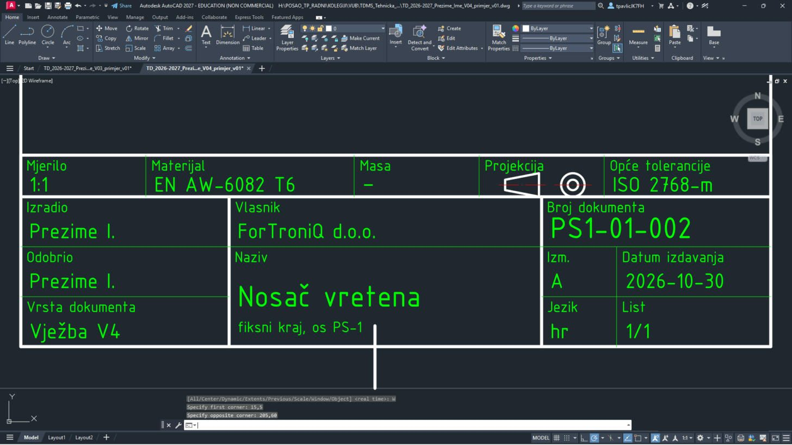
Mjerilo (1:1), opće tolerancije (ISO 2768-m) i list (1/1) ostaju kao u V1. Klikni točno na crtu slova; crticu – možeš upisati i kao običnu crticu
-.EStil kota TD_1-1
6
Kote moraju imati ISO pismo iz V1, strelice 3 mm, tekst 3,5 mm i decimalni zarez. Stil kota napraviš u naredbenom retku:
-DIMSTYLE Enter R Enter ISO-25 Enter (polazni stil), zatim redom postavke iz tablice, na kraju -DIMSTYLE Enter S Enter TD_1-1 Enter. Postavku upisuješ izravno: npr. DIMASZ Enter 3 Enter.| # | Sloj | Naredba | Što upisuješ |
|---|---|---|---|
| 1 | -DIMSTYLE | R ISO-25 (vrati stil kota) | |
| 2 | DIMASZ | 3 | |
| 3 | DIMTXT | 3.5 | |
| 4 | DIMTXSTY | TD_ISO | |
| 5 | DIMSCALE | 1 | |
| 6 | DIMDEC | 0 | |
| 7 | DIMDSEP | , | |
| 8 | DIMTIH | 0 | |
| 9 | DIMTOH | 0 | |
| 10 | DIMTAD | 1 | |
| 11 | DIMEXO | 1 | |
| 12 | DIMEXE | 2 | |
| 13 | DIMGAP | 1 | |
| 14 | -DIMSTYLE | S TD_1-1 (spremi kao novi stil kota; ako pita Overwrite? – Y) |
Na traci Annotate u popisu stilova kota sada piše TD_1-1.
DIMDSEP je zarez: upiši , i Enter. Ime pisma TD_ISO mora biti isto kao stil teksta iz V1 – provjeri naredbom STYLE.FTlocrt – obris, osi i oznaka presjeka
7
Približi gornji dio lista:
ZOOM Enter, W Enter, 20,120 Enter, 200,232 Enter.Upiši:
ZOOM Enter W Enter 20,120 Enter 200,232 Enter8
Nosač vretena (60 × 55 × 22) crtaš u tlocrtu lijevo i u presjeku A-A desno. Prvo obris, osi i oznaka rezne ravnine A-A (debeli kratki krajevi rezne ravnine i strelice bez teksta). Svaki redak tablice je jedna naredba. Upiši naredbu, Enter, pa redom vrijednosti iz retka – nakon svake Enter. Strelica → znači „sljedeća točka“. Kad se u retku promijeni sloj, najprije odaberi taj sloj.
LINE i PLINE bez slova C završi još jednim Enter.| # | Sloj | Naredba | Što upisuješ |
|---|---|---|---|
| 1 | 01_VIDLJIVO | PLINE | 45,150 → 105,150 → 105,205 → 45,205 → C |
| 2 | 03_OSI | LINE | 75,148 → 75,207 |
| 3 | 03_OSI | LINE | 57,180 → 93,180 |
| 4 | 01_VIDLJIVO | LINE | 75,207 → 75,211 |
| 5 | 04_KOTE | -DIMSTYLE | R TD_1-1 (vrati stil kota) |
| 6 | 04_KOTE | LEADER | strelica 81.5,211 → kraj 75,211, Enter, Enter, N (strelica bez teksta) |
| 7 | 04_KOTE | TEXT | točka 83,209.25, visina 3.5, kut 0, tekst A |
| 8 | 01_VIDLJIVO | LINE | 75,148 → 75,144 |
| 9 | 04_KOTE | LEADER | strelica 81.5,144 → kraj 75,144, Enter, Enter, N (strelica bez teksta) |
| 10 | 04_KOTE | TEXT | točka 83,142.25, visina 3.5, kut 0, tekst A |
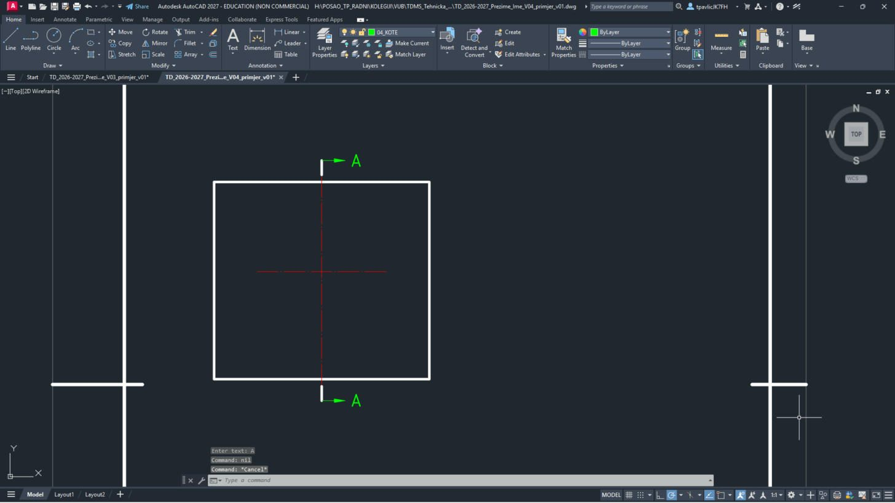
Pravokutnik 60 × 55, crvene osi u sredini, gore i dolje kratka debela crta sa strelicom i slovom A.
LEADER bez teksta: nakon druge točke Enter, opet Enter (bez teksta) i
N (None) – ostane samo strelica.GProvrt Ø28 H7 i provrti M4
9
Provrt za ležaj: Ø28 (polumjer 14), skošenje 0,5 × 45° (vanjska kružnica Ø29) i stepenica Ø20 (polumjer 10):
| # | Sloj | Naredba | Što upisuješ |
|---|---|---|---|
| 1 | 01_VIDLJIVO | CIRCLE | središte 75,180, polumjer 14.5 |
| 2 | 01_VIDLJIVO | CIRCLE | središte 75,180, polumjer 14 |
| 3 | 01_VIDLJIVO | CIRCLE | središte 75,180, polumjer 10 |
10
Diobena kružnica Ø38 (sloj 03_OSI) i četiri navojne rupe M4. Navoj se u tlocrtu crta kao puna kružnica jezgre (Ø3,3) i tanki luk od ¾ kruga za nazivni promjer (Ø4) – luk i križ osi su na tankom sloju 04_KOTE.
| # | Sloj | Naredba | Što upisuješ |
|---|---|---|---|
| 1 | 03_OSI | CIRCLE | središte 75,180, polumjer 19 |
| 2 | 01_VIDLJIVO | CIRCLE | središte 88.435,193.435, polumjer 1.65 |
| 3 | 04_KOTE | ARC | C, središte 88.435,193.435, početak 88.0877,195.4046, kraj 90.4046,193.7823 |
| 4 | 04_KOTE | LINE | 85.235,193.435 → 91.635,193.435 |
| 5 | 04_KOTE | LINE | 88.435,190.235 → 88.435,196.635 |
| 6 | 01_VIDLJIVO | CIRCLE | središte 61.565,193.435, polumjer 1.65 |
| 7 | 04_KOTE | ARC | C, središte 61.565,193.435, početak 61.2177,195.4046, kraj 63.5346,193.7823 |
| 8 | 04_KOTE | LINE | 58.365,193.435 → 64.765,193.435 |
| 9 | 04_KOTE | LINE | 61.565,190.235 → 61.565,196.635 |
| 10 | 01_VIDLJIVO | CIRCLE | središte 61.565,166.565, polumjer 1.65 |
| 11 | 04_KOTE | ARC | C, središte 61.565,166.565, početak 61.2177,168.5346, kraj 63.5346,166.9123 |
| 12 | 04_KOTE | LINE | 58.365,166.565 → 64.765,166.565 |
| 13 | 04_KOTE | LINE | 61.565,163.365 → 61.565,169.765 |
| 14 | 01_VIDLJIVO | CIRCLE | središte 88.435,166.565, polumjer 1.65 |
| 15 | 04_KOTE | ARC | C, središte 88.435,166.565, početak 88.0877,168.5346, kraj 90.4046,166.9123 |
| 16 | 04_KOTE | LINE | 85.235,166.565 → 91.635,166.565 |
| 17 | 04_KOTE | LINE | 88.435,163.365 → 88.435,169.765 |
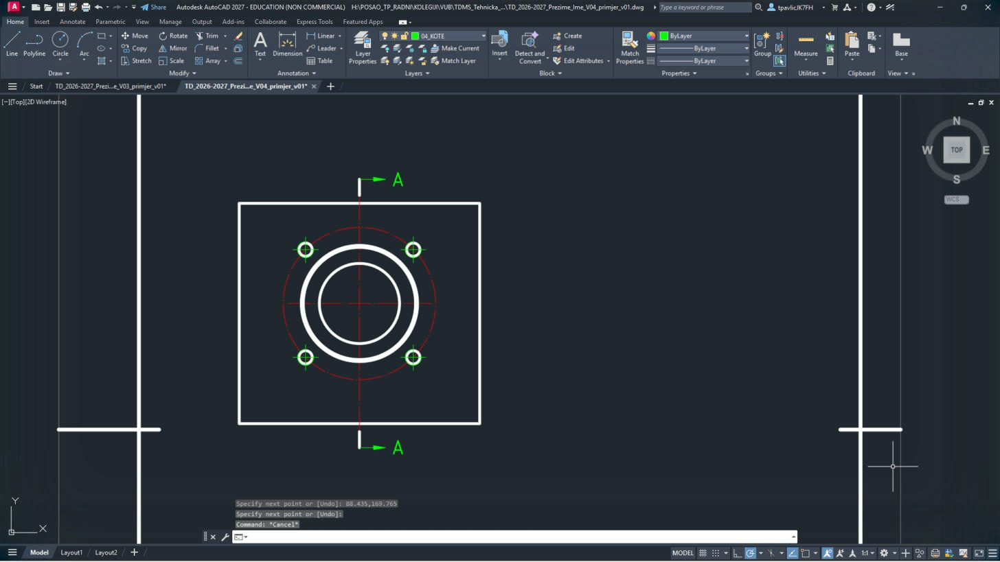
Dvije debele kružnice provrta, tanka kružnica Ø20, crvena crta-točka Ø38 i četiri male rupe s lukom i križem.
Luk navoja uvijek je otvoren (oko ¼ kruga nedostaje) – tako se navoj razlikuje od običnog provrta.
HDjelomični presjek – rupe M6
11
Na donjem rubu su dvije navojne rupe M6 (dubina navoja 12, dubina bušenja 15). Lijevu crtaš kao nevidljivu (sloj 02_NEVIDLJIVO), a desnu u djelomičnom presjeku: granica je prostoručna valovita crta (sloj 04_KOTE), a izrezani materijal se šrafira.
| # | Sloj | Naredba | Što upisuješ |
|---|---|---|---|
| 1 | 03_OSI | LINE | 55,147 → 55,169.5 |
| 2 | 03_OSI | LINE | 95,147 → 95,169.5 |
| 3 | 02_NEVIDLJIVO | LINE | 52.5,150 → 52.5,165 |
| 4 | 02_NEVIDLJIVO | LINE | 57.5,150 → 57.5,165 |
| 5 | 02_NEVIDLJIVO | PLINE | 52.5,165 → 55,166.4434 → 57.5,165, Enter |
| 6 | 02_NEVIDLJIVO | LINE | 52,150 → 52,162 |
| 7 | 02_NEVIDLJIVO | LINE | 58,150 → 58,162 |
| 8 | 02_NEVIDLJIVO | LINE | 52,162 → 58,162 |
| 9 | 04_KOTE | PLINE | 90.6,150 → 91.2,155 → 90.4,160 → 91.3,165 → 92.8,169.5 → 95.5,171 → 98.5,170 → 101,166.5 → 101.8,160 → 103.2,154 → 102.6,150, Enter |
| 10 | 01_VIDLJIVO | PLINE | 92.5,150 → 92.5,165 → 95,166.4434 → 97.5,165 → 97.5,150, Enter |
| 11 | 01_VIDLJIVO | LINE | 92.5,165 → 97.5,165 |
| 12 | 01_VIDLJIVO | LINE | 92,162 → 98,162 |
| 13 | 04_KOTE | LINE | 92,150 → 92,162 |
| 14 | 04_KOTE | LINE | 98,150 → 98,162 |
| 15 | 05_SRAFURA | -HATCH | P, ANSI31, mjerilo 0.5, kut 0, W, N, granica: 90.6,150 → 92.5,150 → 92.5,165 → 95,166.4434 → 97.5,165 → 97.5,150 → 102.6,150 → 103.2,154 → 101.8,160 → 101,166.5 → 98.5,170 → 95.5,171 → 92.8,169.5 → 91.3,165 → 90.4,160 → 91.2,155 → C, na kraju Enter |
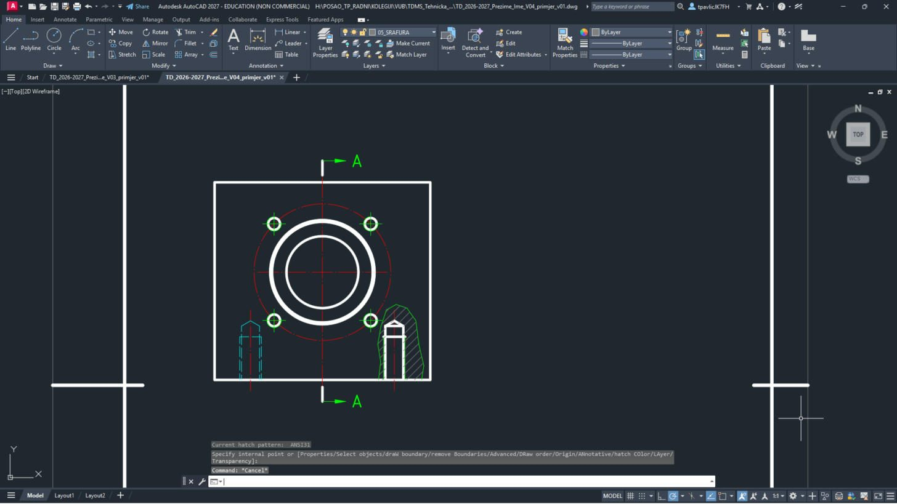
Lijevo plave crtkane crte rupe s vrhom svrdla 120°, desno izrez sa šrafurom i rupom punim crtama.
U presjeku navojne rupe šrafura ide do crte jezgre (puna debela), a nazivni promjer je tanka crta. Ako šrafura ispadne krivo, Ctrl+Z i ponovi.
IPresjek A-A
12
Desno nacrtaj presjek A-A: dva šrafirana dijela (iznad i ispod provrta), stepenica Ø20/Ø28, os, skošenje i rupa M6 kao nevidljiva. Iznad pogleda natpis A-A.
| # | Sloj | Naredba | Što upisuješ |
|---|---|---|---|
| 1 | 01_VIDLJIVO | PLINE | 138,205 → 160,205 → 160,194.5 → 159.5,194 → 152,194 → 152,190 → 138,190 → C |
| 2 | 05_SRAFURA | -HATCH | P, ANSI31, mjerilo 0.5, kut 0, W, N, granica: 138,205 → 160,205 → 160,194.5 → 159.5,194 → 152,194 → 152,190 → 138,190 → C, na kraju Enter |
| 3 | 01_VIDLJIVO | PLINE | 138,150 → 160,150 → 160,165.5 → 159.5,166 → 152,166 → 152,170 → 138,170 → C |
| 4 | 05_SRAFURA | -HATCH | P, ANSI31, mjerilo 0.5, kut 0, W, N, granica: 138,150 → 160,150 → 160,165.5 → 159.5,166 → 152,166 → 152,170 → 138,170 → C, na kraju Enter |
| 5 | 01_VIDLJIVO | LINE | 152,170 → 152,190 |
| 6 | 01_VIDLJIVO | LINE | 159.5,166 → 159.5,194 |
| 7 | 03_OSI | LINE | 135,180 → 164,180 |
| 8 | 03_OSI | LINE | 149,147 → 149,169.5 |
| 9 | 02_NEVIDLJIVO | LINE | 146.5,150 → 146.5,165 |
| 10 | 02_NEVIDLJIVO | LINE | 151.5,150 → 151.5,165 |
| 11 | 02_NEVIDLJIVO | PLINE | 146.5,165 → 149,166.4434 → 151.5,165, Enter |
| 12 | 02_NEVIDLJIVO | LINE | 146,150 → 146,162 |
| 13 | 02_NEVIDLJIVO | LINE | 152,150 → 152,162 |
| 14 | 02_NEVIDLJIVO | LINE | 146,162 → 152,162 |
| 15 | 04_KOTE | TEXT | točka 141,220, visina 5, kut 0, tekst A-A |
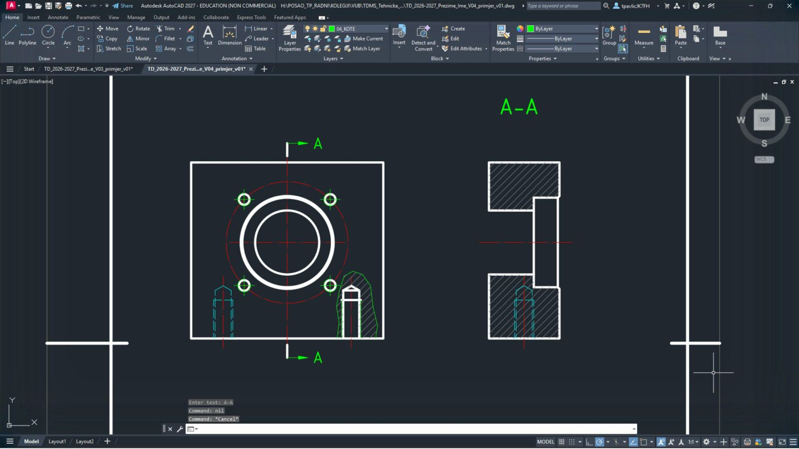
Dva šrafirana pravokutnika sa stepenicom, između njih provrt; gore natpis A-A.
Šrafura ANSI31 mjerila 0,5 – obje šrafure moraju imati isti smjer, jer je to isti dio.
JKote
13
Kote su na sloju 04_KOTE sa stilom TD_1-1. Naredba
DIMLINEAR: prva točka, druga točka, po potrebi T (vlastiti tekst), V ili H (okomita ili vodoravna kota) i na kraju mjesto kotne crte. Prvo osnovne mjere i tolerancije:| # | Sloj | Naredba | Što upisuješ |
|---|---|---|---|
| 1 | 04_KOTE | DIMLINEAR | 45,150 → 42,180, T Enter tekst 30 %%p0,02, V, mjesto kotne crte 37,165 |
| 2 | 04_KOTE | DIMLINEAR | 160,166 → 160,194, T Enter tekst %%c28 H7, V, mjesto kotne crte 170,180 |
| 3 | 04_KOTE | DIMLINEAR | 160,205 → 152,194, H, mjesto kotne crte 156,213 |
| 4 | 04_KOTE | DIMLINEAR | 45,205 → 75,209, H, mjesto kotne crte 60,218 |
| 5 | 04_KOTE | DIMLINEAR | 45,150 → 45,205, V, mjesto kotne crte 29,177.5 |
| 6 | 04_KOTE | DIMLINEAR | 45,150 → 105,150, H, mjesto kotne crte 75,129 |
| 7 | 04_KOTE | DIMLINEAR | 138,150 → 160,150, H, mjesto kotne crte 149,129 |
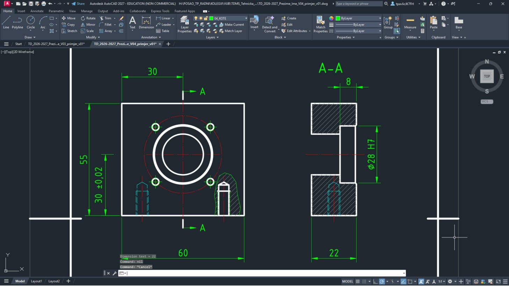
30 ±0,02 i 55 lijevo, 30 i 60 gore i dolje, Ø28 H7 i 8 uz presjek, 22 ispod presjeka.
Posebni znakovi u tekstu kote:
%%c = Ø, %%p = ±, %%d = °. Znak × upiši kao \U+00D7 (obrnuta kosa crta, U, plus, 00D7) – AutoCAD ga sam pretvori u ×.14
Razmak rupa, oznake navoja (LEADER s tekstom), dubine M6, Ø20 i skošenje:
| # | Sloj | Naredba | Što upisuješ |
|---|---|---|---|
| 1 | 04_KOTE | DIMLINEAR | 55,147 → 95,147, H, mjesto kotne crte 75,137 |
| 2 | 04_KOTE | DIMLINEAR | 160,150 → 149,147, H, mjesto kotne crte 154.5,137 |
| 3 | 04_KOTE | LEADER | strelica 61.565,193.435 → kraj 42,210, Enter, tekst: %%c38 (svaki redak Enter, na kraju još Enter) |
| 4 | 04_KOTE | LEADER | strelica 89.8492,194.8492 → kraj 95,226, Enter, tekst: 4 \U+00D7 M4, dubina 8 (svaki redak Enter, na kraju još Enter) |
| 5 | 04_KOTE | LEADER | strelica 98,156 → kraj 111,144, Enter, tekst: 2 \U+00D7 M6 (svaki redak Enter, na kraju još Enter) |
| 6 | 04_KOTE | DIMLINEAR | 98,150 → 98,162, V, mjesto kotne crte 111,156 |
| 7 | 04_KOTE | DIMLINEAR | 97.5,150 → 97.5,165, V, mjesto kotne crte 118,157.5 |
| 8 | 04_KOTE | DIMLINEAR | 145,170 → 145,190, T Enter tekst %%c20, V, mjesto kotne crte 145,180 |
| 9 | 04_KOTE | LEADER | strelica 159.75,194.25 → kraj 170,210, Enter, tekst: 0,5 \U+00D7 45%%d (svaki redak Enter, na kraju još Enter) |
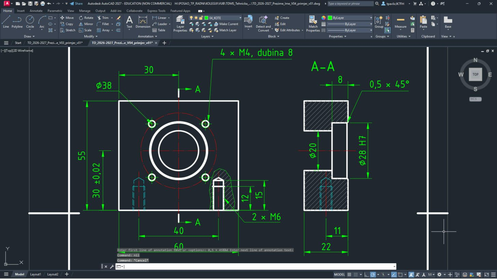
Ø38 i 4 × M4, dubina 8 s pokaznim crtama, 2 × M6 s kotama 12 i 15, 40 i 11 dolje, Ø20 u presjeku i 0,5 × 45° gore desno.
LEADER: prva točka je vrh strelice (na bridu ili rupi), druga je koljeno; zatim Enter, tekst, Enter i još jednom Enter.
KNapomena i cijeli list
15
Iznad zaglavlja dodaj napomenu o nekotiranim skošenjima i općim tolerancijama (sloj 04_KOTE):
| # | Sloj | Naredba | Što upisuješ |
|---|---|---|---|
| 1 | 04_KOTE | TEXT | točka 24,60, visina 3.5, kut 0, tekst Nekotirana skošenja 0,5 \U+00D7 45%%d. Opće tolerancije ISO 2768-m. |
16
Cijeli list:
ZOOM Enter W Enter -5,-5 Enter 215,300 Enter.Upiši:
ZOOM Enter W Enter -5,-5 Enter 215,300 Enter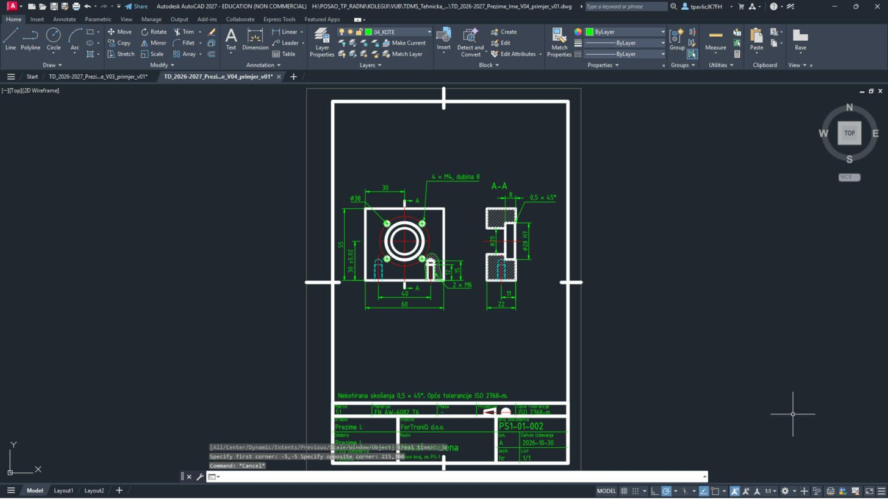
Tlocrt i presjek A-A u gornjoj polovici lista, napomena iznad zaglavlja, zaglavlje PS1-01-002.
RIspis u PDF
17
Pritisni Ctrl + P. Postavke iz V1 su zapamćene (DWG To PDF.pc3, ISO full bleed A4, Window, Center the plot, monochrome.ctb). Za svaki list klikni Window< i upiši njegova dva kuta iz tablice.


18
Namjesti Scale prema tablici, klikni OK i spremi PDF pod imenom iz tablice.
| List | Window – prvi kut | Window – drugi kut | Scale | Ime PDF-a |
|---|---|---|---|---|
| 1 – nosač vretena | 0,0 | 210,297 | 1:1 | TD_2026-2027_Prezime_Ime_V04_L1 |


ZSpremi, vrati postavke i predaj
19
Vrati postavke:
DYNMODE → 3, OSMODE → 4133, GRIDMODE → 1; zatim QSAVE Enter.Upiši:
DYNMODE Enter 3 Enter OSMODE Enter 4133 Enter GRIDMODE Enter 1 Enter QSAVE Enter20
U sustavu za predaju, u zadaći za V4, predaj
TD_2026-2027_Prezime_Ime_V04.dwg i …_L1.pdf, uz ispunjen radni list.Prije predaje otvori svaki PDF i usporedi ga sa slikom na vrhu upute.